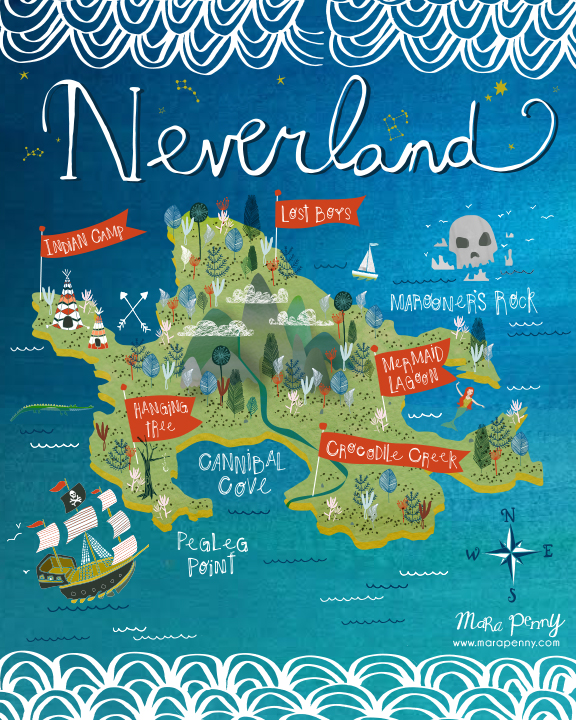

Let's explore Neverland !

- "Indian Camp" This is where Tiger Lily and her tribe are located. There are multiple tepees here, which serve as homes for the tribe. Let's jump into this story!
- "Lost Boys" This area is where Peter Pan lives with his friends, lost boys. Lost boys are the children who fall out of their perambulators when the nurse is looking the other way. Let's jump into this story!
- "Cannibal Cove" This area is mentioned only when Captain Hook says he searched there in an attempt to find Peter's hideout. As its name would suggest, it is inhabited by cannibalistic jungle natives. Let's jump into this story!
- "Mermaid Lagoon" This is an mysterical area which is a favorite resting place of the legendary mermaids who live within the depths of the sea surrounding the island. Let's jump into this story!
- "Crocodile Creek" The home of the crocodile who ate Captain Hook's left hand. It is also said to be the location of a hidden treasure. The very mention of Crocodile Creek makes Hook very nervous. Let's jump into this story!